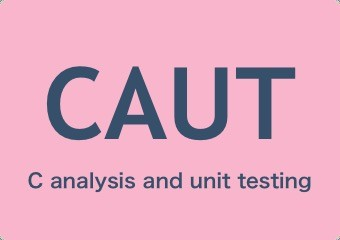
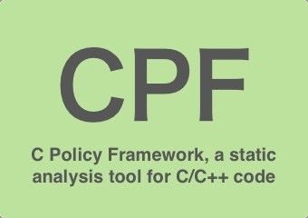
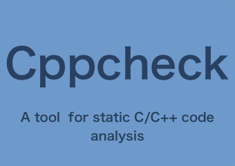

CAUT 是一款基于动态符号执行技术，针对 C 程序自动生成测试用例的工具。 CAUT 支持单元测试和全局测试。 CAUT 的全名是 C Analysis and Unit Test , 即C 语言分析和单元测试工具。

CBMC 全称是 a Bounded Model Checker for C and C++ programs 。是一个 C/C++ 代码越界分析检查工具。

CPF［UNITS］工具提供了针对 C 语言的单位信息错误检测，用户通过在源代码中，对变量或函数添加特定注释的方式，完成对单位信息的检测工作。

Cppcheck 是一个 C/C++ 代码分析工具，最开始的名称是 "C++check" ，而后改称为 "Cppcheck" 。